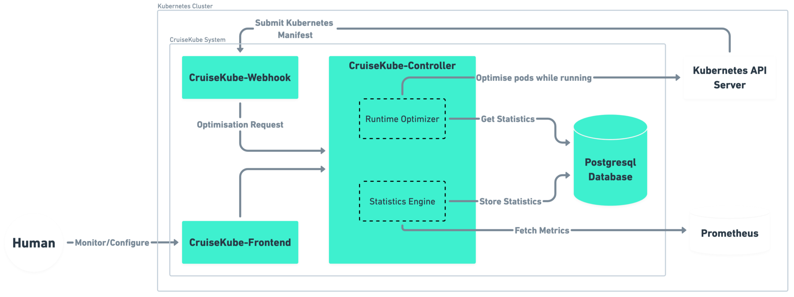
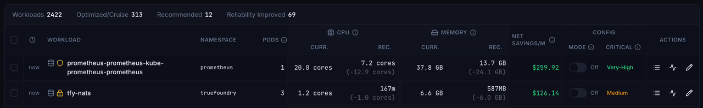

Introduction
Meet CruiseKube
CruiseKube is a Kubernetes controller which recommends optimized CPU and memory for workloads. It watches real behavior, learns stable demand and spikes, and applies in-place request updates so you stop paying for guesses, without giving up the guardrails that keep services reliable.
Observe
Prometheus: live + historical metrics.
Learn
Patterns and workload behavior.
Recommend
CPU & memory request targets.
Apply
Admission + runtime, safely.
Re-observe
Keep adapting as things change.
How it works
CruiseKube observes the cluster (Prometheus and the Kubernetes API), derives CPU and memory targets, and applies them at admission and runtime (in-place resize where the cluster supports it). The diagram below is a high-level map of how those pieces connect.

For components, background tasks, and control flows in detail, see Architecture in Concepts.
Problem: Why Kubernetes Clusters Stay Expensive
Kubernetes gives you bin-packing (cluster autoscaler, Karpenter, etc.), but waste often lives at the pod: identical templates, peak-sized requests, and limits that throttle or kill at the wrong time. CruiseKube closes the loop per pod, on the node where it actually runs.
If you have ever bumped requests "just to be safe" run fat nodes because of a few noisy neighbors, or asked a team to manually tune YAML every quarter, CruiseKube is aimed at you.
Over-provisioning
Padded requests to dodge throttling and OOM → wasted capacity.
Operational lag
YAML tweaks by hand, rarely in step with real usage.
Inefficient scaling
High requests strand node capacity; autoscalers follow the wrong signals.
What CruiseKube does differently
| You get | Why it matters |
|---|---|
| Admission-time sizing | New pods start closer to reality before the scheduler commits capacity. |
| Continuous runtime optimization | Running pods are adjusted on a schedule—no rolling restart for request changes where the cluster supports in-place resize. |
| Node-aware headroom sharing | Spike capacity is shared across pods on a node, instead of every pod reserving its own private peak. |
| PSI-informed CPU | CPU decisions can incorporate pressure / contention signals—not just raw usage averages. |
| Memory with a safety story | Requests converge toward steady demand; limits retain headroom; OOM handling feeds learning back into the next admission pass. |
| Explicit priorities | When the math does not fit, eviction order follows policies you set—not random chaos. |
For a line-by-line comparison to Vertical Pod Autoscaler, see CruiseKube vs VPA.
Safe adoption path
CruiseKube is built for progressive trust:
- Install with Helm, wire Prometheus and PostgreSQL (or use the bundled chart options).
- Explore recommendations in the dashboard—workloads start in Recommend (observe-only) until you opt in; see Installation and Policies & modes.
- Enable Cruise mode per workload when you are ready for applied changes.
- Tune priorities and pricing so cost views and eviction behavior match your risk model—Resource pricing and Tradeoffs.
flowchart LR
A[Install] --> B[Dashboard — recommendations]
B --> C{Comfort level}
C -->|Conservative| D[Recommend only]
C -->|Ready| E[Cruise mode + priorities]
E --> F[Monitor savings & SLOs]
Requirements in brief
- Kubernetes 1.33+ (in-place pod resource updates are central to the design).
- Prometheus with the metrics CruiseKube expects (see Pre-requisites).
- PostgreSQL (managed by you or the subchart).
Next steps
| Step | Page |
|---|---|
| Understand scenarios | Use cases |
| Compare to VPA | CruiseKube vs VPA |
| Common questions | FAQ |
| Install | Pre-requisites → Installation |
| Day-2 operations | Dashboard, Policies & Modes, Troubleshooting |
| Internals | Architecture, Algorithm |
Community
- GitHub: truefoundry/CruiseKube
- Discord: TrueFoundry community
- Artifact Hub: cruisekube Helm chart
If CruiseKube fits your cluster, the fastest validation is a normal install, a week of metrics with workloads on Recommend, then a small pilot cohort on Cruise—then expand with confidence.